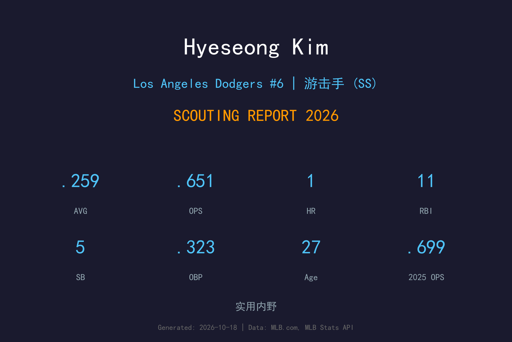
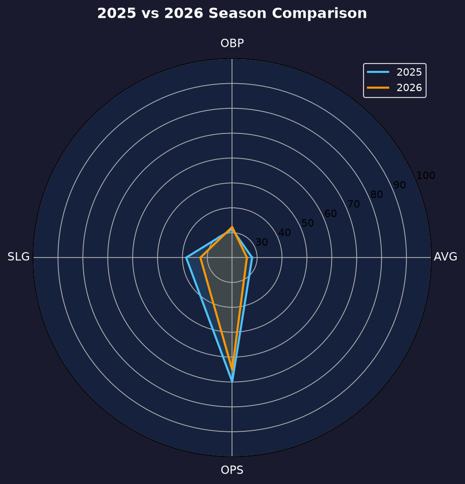
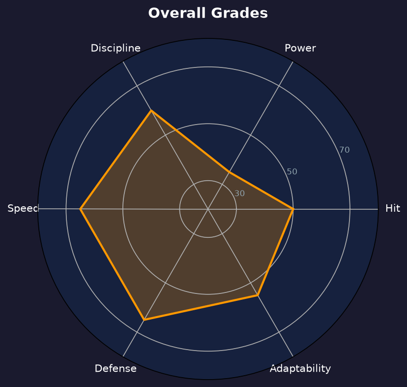

Los Angeles Dodgers | 内野手（SS/2B） | 右投 / 左打 | KBO 明星转型

金惠成是KBO 培养的速度型内野明星，2025 年通过入札制度加盟道奇后，2026 年在大小联盟之间寻找自己的位置。他 43 场出赛缴出 .259/.323/.328 的成绩单，上垒率较 2025 年（.314）反而提升。
金惠成的武器是速度与防守：5 次盗垒 5 次成功、二垒/游击双位守备、KBO 时代多次金手套级别的守备评价。他的打击火力在 MLB 尚未兑现（整季仅 1 轰），但 12 次保送显示他正学会用选球弥补力量差距。
27岁的金惠成站在"回韩国当明星还是在 MLB 当拼图"的十字路口。2027 年他的目标是把 AVG 拉回 .270+，并用守备与跑垒稳固"大联盟内野第一替补"的定位。
多次入选 KBO 全明星，以速度、守备与 contact 打击著称，是韩国最受瞩目的内野手之一。
通过入札制度挑战 MLB，首年 71 场 .280/.314 展现 KBO 打击王的适应力。
43 场出赛，上垒率提升至 .323，在大小联盟之间持续调整打击机制。

| 赛季 | G | AVG | OBP | SLG | OPS | HR | SB |
|---|---|---|---|---|---|---|---|
| 2025 | 71 | .280 | .314 | .385 | .699 | 3 | 13/14 |
| 2026 | 43 | .259 | .323 | .328 | .651 | 1 | 5/6 |
打击率与长打下滑，但保送率从 4.1% 大幅提升至 9.2%——他正在从"KBO contact 打者"转型为"MLB 上垒型工具人"，这是正确的适应方向。
在 MLB 第二年，多数亚洲打者会经历"被针对后的数据全面下滑"，金惠成却反向上垒率提升 9 点（.314→.323）。12 次保送是 2025 年（7 次）的近两倍——他学会了在 count 落后时保送上垒，这是 KBO 时代很少需要的能力。
KBO 时代的他是以 gap power 与三垒打闻名的打者，但 MLB 的投手速度让他的长打率从 .385 跌至 .328。116 打数仅 1 轰说明他暂时无法用力量威胁 MLB 投手，必须以速度、守备与上垒来贡献价值。
这是金惠成的"调整与定位"之年。他在大小联盟之间往返，但每次获得机会都展现出职业态度。道奇对他的耐心仍在——KBO 明星的 MLB 适应从来都需要两年以上。

速度与守备立足的 KBO 明星转型者
B 级 / 速度型内野替补
金惠成的2027赛季是"证明自己能留在 MLB"的决胜年。他需要把打击率拉回 .270 以上，并用守备与跑垒让教练组无法忽视他的存在。
2026：43 场 .259/.323，大小联盟往返的调整年
2027：目标站稳大联盟、AVG ≥ .270、20+ 盗垒
2028+：若打击兑现，可发展为 MLB 常规内野；否则可能考虑回流 KBO
金惠成出生于韩国京畿道城南市，是 KBO Kiwoom 英雄队培养的速度型内野明星。在 KBO 的多个赛季里，他以 elite 守备、盗垒威胁与稳定的 contact 打击闻名，多次入选全明星，是韩国棒球界最受瞩目的内野手之一。
2025 年，他通过入札制度挑战 MLB，与洛杉矶道奇签约。首年 71 场出赛、.280 打击率展现了他不俗的适应力，但 MLB 投手的火力与球种多样性也暴露了他力量上的落差。2026 年他在大小联盟之间调整，学习用选球与上垒弥补长打的不足。
场外的金惠成以谦逊与勤奋著称，与队中的亚洲球员（大谷、山本、佐佐木）形成了良好的互助氛围。他的 MLB 之路是 KBO 明星转型的缩影——路不易走，但每一步都算数。